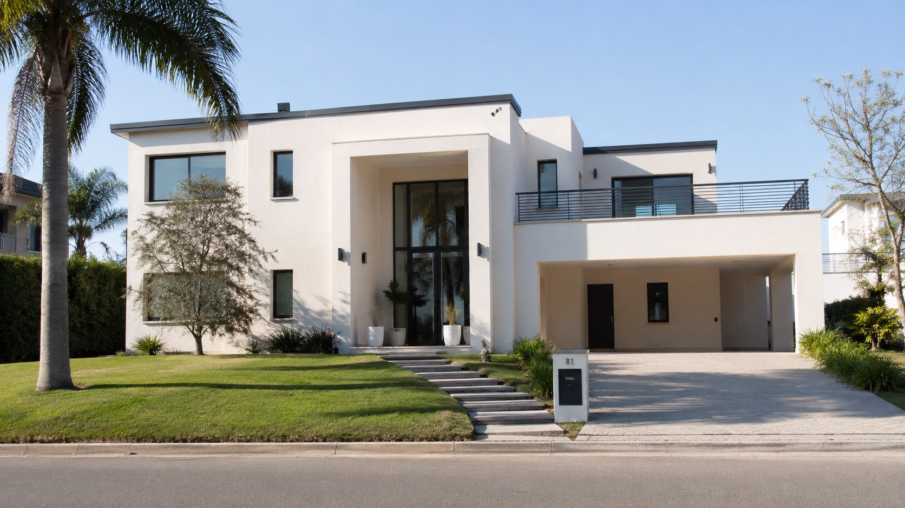

5 años en la zona
Conocemos las casas de San Martín, Villa Ballester, Villa Maipú, Villa Lynch y alrededores. Sabemos cómo es el polvo de acá y qué materiales se usaron en cada época.

Lavado a presión · San Martín y Zona Norte
Hace 5 años que lavamos frentes, techos, patios, pisos exteriores y piletas en San Martín y alrededores. Equipo propio, criterio para cada superficie y revisión final con vos antes de irnos del trabajo.
Por qué nosotros
Cada material aguanta distinto. Una pared revocada no se trata como una teja, y un piso de hormigón no se lava igual que un deck de madera. Por eso cada trabajo lo planificamos antes de arrancar.
Conocemos las casas de San Martín, Villa Ballester, Villa Maipú, Villa Lynch y alrededores. Sabemos cómo es el polvo de acá y qué materiales se usaron en cada época.
Hidrolavadora industrial, lanza telescópica de 6 metros, manguera de alcance de 20 metros y escalera. Nada alquilado, nada improvisado. Si rompe, lo arreglamos nosotros.
Revoque, ladrillo, madera, teja, hormigón, fibrocemento, pintura. Cada superficie se lava distinto. Por eso no se pelan paredes ni se sueltan tejas.
Antes de cerrar el trabajo recorremos juntos lo que se hizo. Si ves algo que no te convence, lo repasamos en el momento sin costo adicional. No nos vamos a medias.
Servicios
Para cada superficie elegimos la presión, la distancia, la herramienta y el tiempo de trabajo según la altura, el material y cuánta mugre tenga encima.
Lavado de paredes exteriores, manchas, polvo acumulado y marcas de intemperie.
Trabajo con manguera de alcance y herramientas para zonas altas, según acceso y seguridad.
Entradas, veredas, patios y galerías con barro, verdín o marcas de uso.
Bordes, escaleras y revestimientos que con el tiempo se llenan de tierra, verdín o sarro.
Zonas que cubrimos
Si tu casa está en la zona, te respondemos el mismo día y coordinamos visita o presupuesto con fotos. Si estás un poco más lejos, consultanos igual, muchas veces se puede.
Pasá el mouse (o tocá) una zona para ver el nombre.
San Martín centro, Villa Maipú, Villa Lynch, Villa Ballester, Villa Devoto Norte, José León Suárez, San Andrés.
Billinghurst, Caseros, Tres de Febrero, Saavedra y zonas limítrofes con el partido. Consultanos por tu barrio.
Vicente López, San Isidro, Munro u otras del Norte. Lo vemos según la fecha y si andamos con otros trabajos cerca.
Guías útiles
Notas cortas sobre precios, cada cuánto conviene lavar, cómo sacar el verdín y qué superficies hay que tratar con cuidado.

Variables que influyen en el presupuesto y datos que conviene enviar.
Leer guía
Por qué aparece, cuándo actuar y qué errores evitar.
Leer guía
Checklist simple para recibir una respuesta más precisa.
Leer guíaProceso
Armamos el presupuesto con un par de datos y planificamos el trabajo según el tamaño, la altura y el acceso. Si te conviene, lo cotizamos por proyecto, por jornada o por superficie.
Contanos dónde estás, qué querés limpiar y si corre urgencia.
Frente, laterales, techo, pisos, pileta o la casa completa.
Llevamos equipo, manguera, escalera y lanza telescópica según el caso.
Te dejamos todo limpio y repasamos los detalles antes de irnos.
Equipo de trabajo
Muchas zonas altas las resolvemos desde el piso con una lanza telescópica de 6 metros. Para techos y rincones más alejados tenemos manguera de alcance de 20 metros y escalera.

Trabajos reales
Videos de casas reales en San Martín y alrededores. Sin filtros, sin trampas de cámara. Lo que ves es lo que queda.
Pared de revoque fino de unos 12 metros de largo. Se trabajó con presión media, manguera de alcance y lanza telescópica para llegar a la parte alta sin escalera. Tiempo total en obra: media jornada.
Trabajo de 3 horas. Quedó pareja sin pelar el revoque.
Hormigón llaneado. Media jornada con pretratamiento en las manchas.
Trabajo en altura desde el piso con lanza telescópica. Sin andamios.
Lo que dicen los clientes
Mensajes y reseñas de vecinos que pidieron presupuesto, dejaron entrar a un equipo a su casa y quedaron conformes con cómo se hizo el trabajo.
El frente estaba hecho un desastre, todo gris de polvo y con verdín en una pared del costado. Vinieron, me explicaron qué iban a hacer y al otro día estaba como nuevo. Re recomendados.
Pedí presupuesto un sábado y el lunes ya estaban en casa. Trabajo rápido, prolijo y sin romper nada. Las plantas las cubrieron antes de arrancar. Cero queja, recontra atentos.
Lo que más me gustó es que antes de empezar me explicaron por qué no se podía usar la misma presión en el techo de tejas y en la pared de revoque. Se nota que saben lo que hacen. Quedó impecable.
Cotización
Completá los datos principales y abrimos WhatsApp con el mensaje armado para acelerar la cotización.
Preguntas frecuentes
Si tu pregunta no está acá, mandala directo por WhatsApp y la respondemos en el día.
Un frente o una pileta puede resolverse en pocas horas. Una casa completa con cuatro caras, techo y pisos suele tomar entre uno y dos días según tamaño, altura y estado de la suciedad.
Antes de cerrar el trabajo recorremos juntos lo que se hizo. Si ves una zona que no te convence, la repasamos en el momento sin costo adicional. No nos vamos hasta que estés conforme con lo que se ve.
Si la lluvia impide trabajar con seguridad, pausamos y retomamos al día siguiente o cuando se pueda coordinar, sin costo adicional. Se reprograma la jornada y listo.
Antes de arrancar protegemos lo que está cerca del área de trabajo. La presión se ajusta según el material: una pared revocada no se lava igual que una teja ni que un vidrio. Por eso no pasa lo que pasa cuando alguien sin experiencia agarra una hidrolavadora de alquiler.
Por proyecto, según superficie, altura, acceso y tipo de suciedad. Las fotos y videos ayudan muchísimo a cotizar con menos margen de error. Mandando un par de imágenes por WhatsApp ya se puede dar un rango bastante preciso.
No. Coordinamos un horario de entrada y un punto de toma de agua y luz. Si no podés estar todo el día está bien, pero al cierre conviene que pases para hacer la revisión final juntos.
Sí. Con lanza telescópica de 6 metros y manguera de alcance de 20 metros resolvemos muchas zonas altas desde el piso, sin andamios. Para techos y casos puntuales miramos el acceso y la seguridad antes de cotizar.
Las hidrolavadoras de alquiler son livianas y tienen una sola presión. Sirven para casos suaves y para gente que sabe lo que hace. Acá usamos equipo industrial, ajustamos presión por material y sabemos qué pasa con cada superficie. Por eso no se pelan paredes ni se rompen tejas.